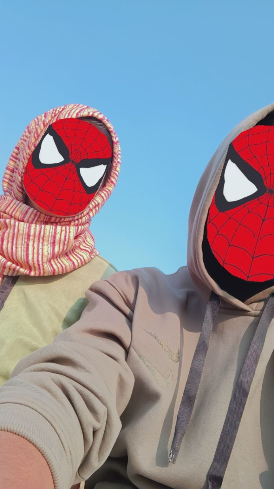
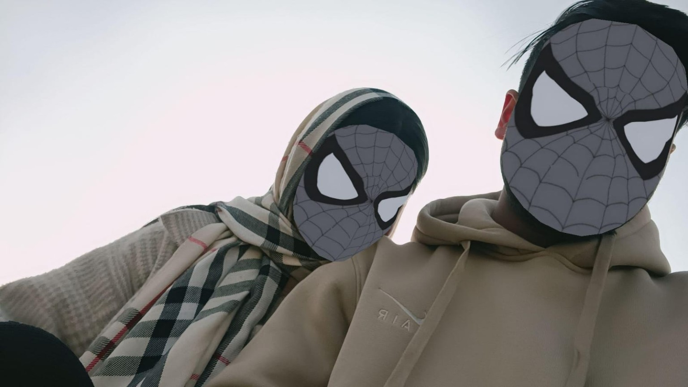
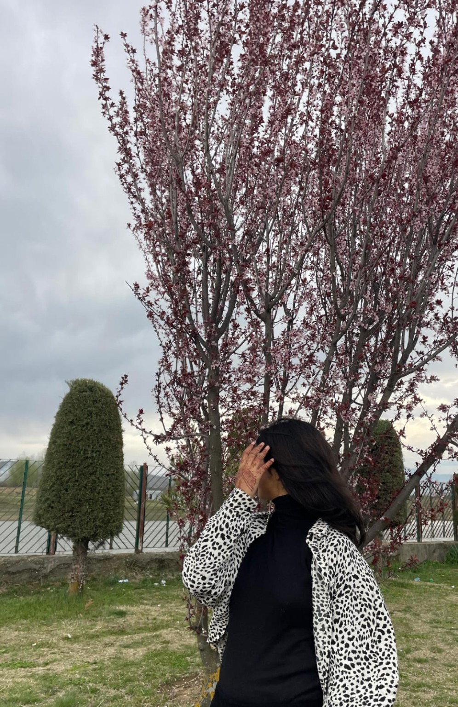
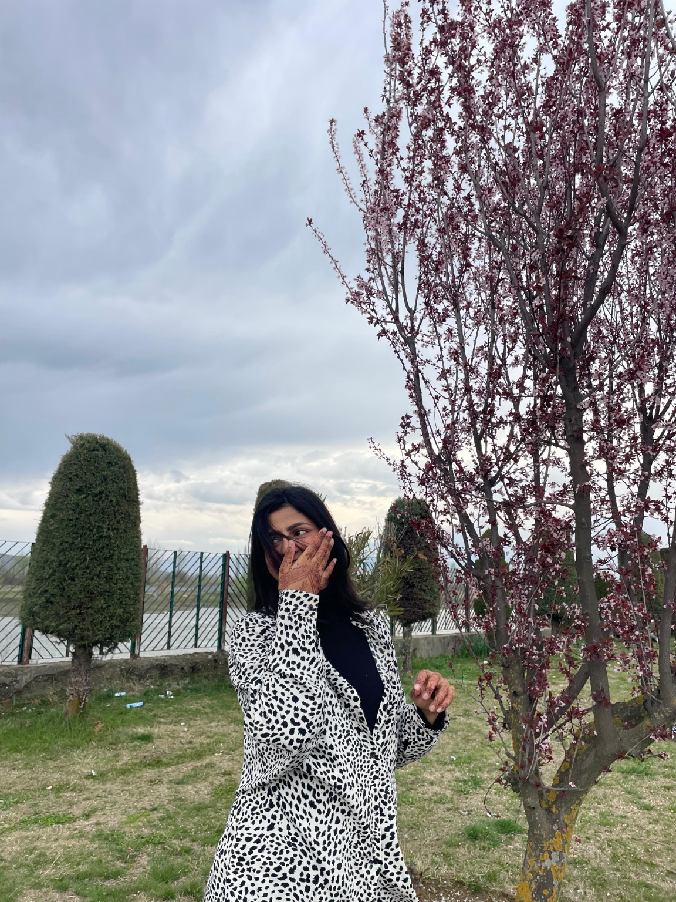
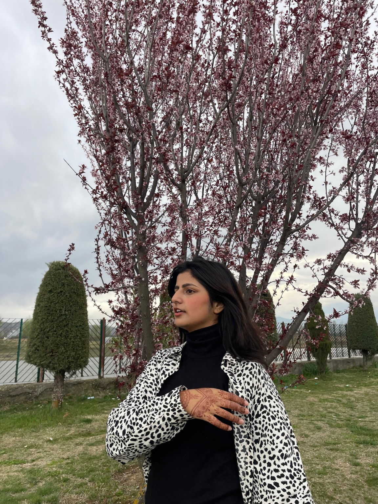
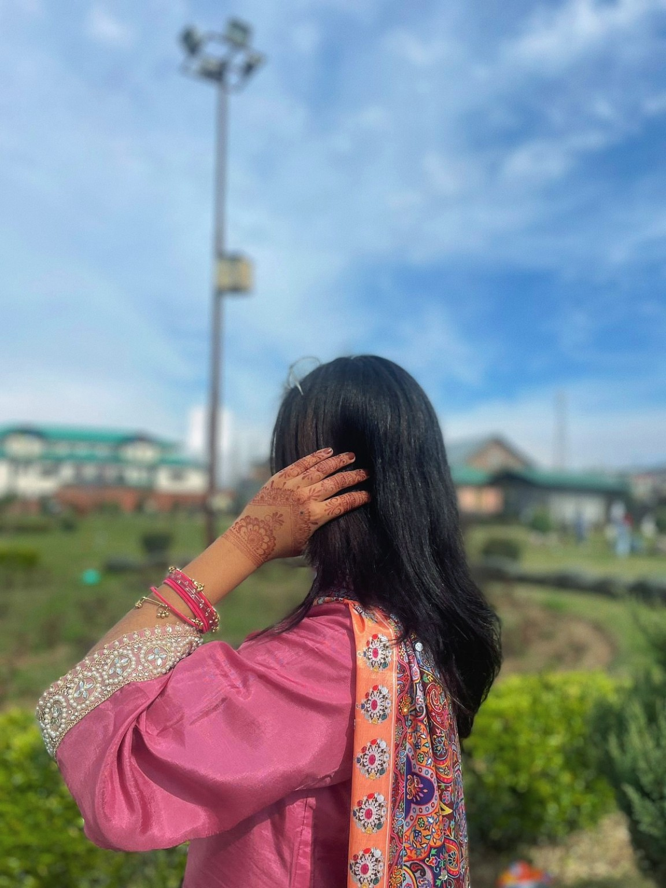

Some things are easier to feel than to say.
I don't know if this is a birthday wish, a letter, or just everything I've never properly been able to say.
We've fought. We've hurt each other. We've broken up. We've walked away from each other more than once.
There were moments when we probably thought we had finally reached the end of us.
But somehow… we're still here.
Still talking. Still laughing. Still annoying each other. Still flirting. Still caring. Still finding our way back to each other.
And maybe that's what makes us different.
Because no matter how many times we fall apart, somehow neither of us ever really becomes a stranger to the other.
I don't know what we're supposed to call what we are anymore. Maybe we don't even need to call it anything.
I just know that after everything, when the anger fades, when the arguments are over, when the distance gets quiet… it's still you I think about.
And if there's one thing I've learned from everything we've been through, it's that some people can leave your life, but they never really leave your heart.
It's about the messy parts. The beautiful parts. The memories. The fights. The times we came back. The moments that made me fall for you all over again.
And most importantly… after everything, we're still here. ❤️
Today, on your birthday, I just want you to know how grateful I am that somehow, through every version of us, you've remained someone I care about this deeply.
I hope this year is softer on you. I hope you get every happiness you deserve. I hope you smile more, worry less, and achieve everything you dream about.
And selfishly, I hope I get to be there for some of those smiles too.
Happy birthday. 🎂❤️
“No matter how many times our story gets complicated, somehow we keep finding our way back to the same place — each other.”
I wouldn't erase every fight.
I wouldn't erase every mistake.
I wouldn't erase the complicated parts.
Because somehow, every version of us brought me here.
And if I could keep only one thing from all of it…
I would keep the memories.
Some moments don't need a long explanation. They just need to be remembered.

One of those moments I'd keep if I could freeze time.

Proof that somewhere between everything, there was always something beautiful.

Just you being you. And somehow, that's always been enough.

Some people become memories. Some become a part of you.

No caption could really explain why some pictures stay with you.

And one more reason I'm glad our paths crossed.
but I know I'm grateful that it was us.
Whatever we call us. Whatever happens next. Thank you for still being you.
there's only one thing left to say…
No matter how many times we lose our way,
I hope we never become strangers.